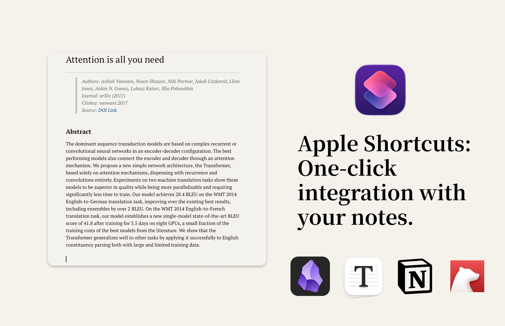
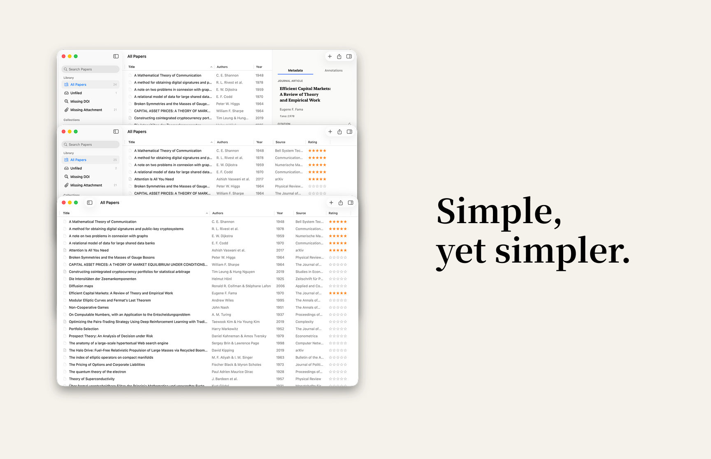

From DOI
to your notes app.
The metadata-first path — add papers by DOI, build your record, then push a formatted citation card to any notes app with one Shortcut.
Add via DOI or BibTeX
Enter a DOI to fetch a complete metadata record — or import a .bib file from Zotero, Mendeley, or any BibTeX-compatible tool. Lattice pulls title, authors, year, journal, abstract, volume, issue, pages, and generates a citekey.
Multiple metadata services queried in parallel for best coverage
Attach a PDF later — or work purely with the metadata record

Organise and annotate
Assign the paper to Collections and Tags, set a star rating, and add your own freeform notes. The inspector gives you full access to every metadata field — all editable inline, all saved locally.
Collections: "Machine Learning", "To Read", "Writing"
Tags with colors: "empirical", "important", "idea"
Ratings, notes, and full metadata editing in one inspector

Trigger a Shortcut
Run your Lattice Shortcut from anywhere on macOS. A picker appears — choose the paper — and Lattice renders a formatted note using your template. The result is returned to the Shortcut for pasting, sharing, or routing into any app.
Assign a global keyboard shortcut to trigger it from any app
Include or exclude annotations with a single toggle
Returns plain text — composable with any other Shortcut action

Land in your notes app
The formatted note appears in Obsidian, Bear, Notion, Craft, or any app your Shortcut routes to. Lattice is not trying to replace your note-taking setup — it is built to connect your paper library to it, cleanly.
Works with every app that accepts clipboard text or Shortcut output
Your template controls exactly which fields appear and in what format
